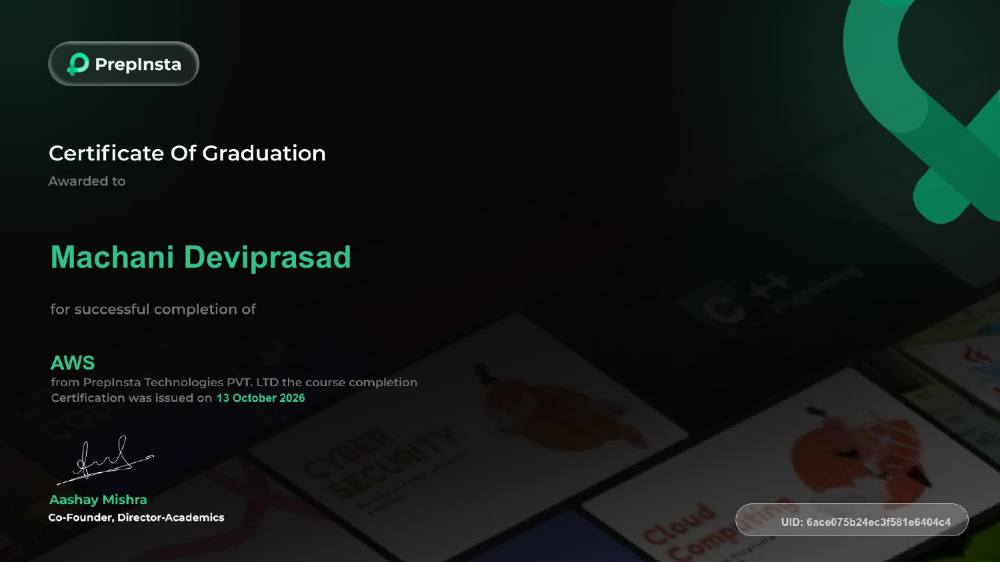

01 / COMPUTE
Compute & scaling
Launching and managing instances, event-driven functions, and adjusting capacity to demand.
EC2 · Lambda · Auto Scaling
Aspiring AWS Cloud Engineer
Hello, I’m Machani Deviprasad.
BCA graduate learning to connect compute, storage, networking, and web hosting with AWS.
I’m starting my cloud career with a practical approach: learn the fundamentals, understand how they connect, and keep improving.
I’m a Bachelor of Computer Applications graduate based in Kurnool, Andhra Pradesh, with working knowledge of AWS services and an interest in cloud infrastructure.
My experience at Blinkit taught me to follow documented processes, work carefully under time pressure, and collaborate with a team. I’m bringing that mindset to an entry-level role in Cloud Engineering, AWS Support, or Cloud Operations.
Date of birth ·
02 / THE TOOLKIT
Working knowledge developed through AWS training and study, supported by version control and a practical approach to learning.
Showing all 9 skill categories
Launching and managing instances, event-driven functions, and adjusting capacity to demand.
Persistent block storage with EBS, S3 buckets and access control, and S3 Glacier for low-cost archival storage.
Subnets, route tables, internet gateways, security groups, hosted zones, domain routing, and public, private, and Elastic IPs.
Hosting and deploying web applications, and understanding how custom domains connect.
Foundations of managed relational databases within the AWS ecosystem.
Users, groups, roles, and policies with an understanding of least-privilege access.
Understanding how Application Load Balancers distribute incoming traffic across EC2 instances.
Monitoring AWS resources and understanding alarms and alerts with Amazon CloudWatch.
Tracking code changes with Git, working with branches and commits, and managing repositories and collaboration on GitHub.
My training covers EC2 and EBS, S3 access control and S3 Glacier archival storage, VPC design and IP addressing, Auto Scaling, RDS, Lambda, IAM best practices, and hosting with Amplify and Route 53. I have also studied Application Load Balancers for distributing traffic across EC2 instances, and CloudWatch monitoring, alarms, and alerts.
03 / PERSONAL PROJECT
Putting AWS storage and web-hosting knowledge into practice with a personal S3 website.
Hosted my portfolio website on Amazon S3 with a main page and a custom error page.
AWS course completion from PrepInsta, issued on 13 October 2026.

Awarded for successful completion of the AWS course from PrepInsta Technologies Pvt. Ltd.
Issued
05 / EXPERIENCE
Worked in a fast-paced quick-commerce fulfillment environment.
05 / EDUCATION
06 / WHAT’S NEXT?
Open to entry-level Cloud Engineering,
AWS Support, and Cloud Operations roles.